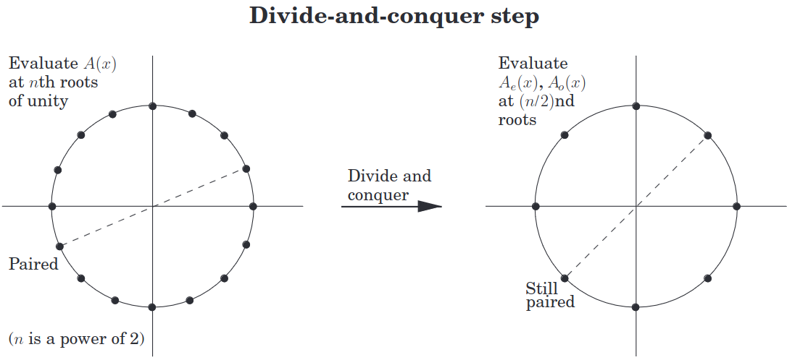

convolution given sequence a = ( a k ) 0 n a=(a_k)_0^{n} a = ( a k ) 0 n b = ( b k ) 0 m b=(b_k)_0^{m} b = ( b k ) 0 m
a ∗ b = ( c k ) 0 n + m c k = ∑ i + j = k a i b j a\ast b=(c_k)_0^{n+m}\quad c_k=\sum_{i+j=k}a_ib_j a ∗ b = ( c k ) 0 n + m c k = i + j = k ∑ a i b j i.e. sum of the diagonals
example a = ( a i ) 0 6 a=(a_i)^6_0 a = ( a i ) 0 6 b = ( b i ) 0 3 b=(b_i)_0^3 b = ( b i ) 0 3
polynomial multiplication A ( x ) = ∑ a i x i = a ⋅ ( 1 , x , ⋯ , x n ) B ( x ) = ∑ b i x i = b ⋅ ( 1 , x , ⋯ , x m ) ∴ A ( x ) B ( x ) = ∑ c i x i = ( a ∗ b ) ⋅ ( 1 , x , ⋯ , x n + m ) \begin{align*}
&&A(x)&=\sum a_ix^i=a\cdot(1,x,\cdots,x^{n})\\
&&B(x)&=\sum b_ix^i=b\cdot(1,x,\cdots,x^{m})\\
\therefore&&A(x)B(x)&=\sum c_ix^i=(a\ast b)\cdot(1,x,\cdots,x^{n+m})
\end{align*} ∴ A ( x ) B ( x ) A ( x ) B ( x ) = ∑ a i x i = a ⋅ ( 1 , x , ⋯ , x n ) = ∑ b i x i = b ⋅ ( 1 , x , ⋯ , x m ) = ∑ c i x i = ( a ∗ b ) ⋅ ( 1 , x , ⋯ , x n + m ) interpolation theorem any degree d d d p p p d + 1 d+1 d + 1 p p p
∴ \therefore ∴ p ( x ) = ∑ a i x i p(x)=\sum a_ix^i p ( x ) = ∑ a i x i
coefficients a 0 , ⋯ , a d a_0,\cdots,a_d a 0 , ⋯ , a d
values p ( x 0 ) , ⋯ , p ( x d ) p(x_0),\cdots,p(x_d) p ( x 0 ) , ⋯ , p ( x d )
Shamir’s Secrect Sharing let a 0 a_0 a 0 n n n
choose a 1 , ⋯ , a k a_1,\cdots,a_k a 1 , ⋯ , a k k ⩽ n k\le n k ⩽ n
let A ( x ) = a 0 + a 1 x + ⋯ + a k x k A(x)=a_0+a_1x+\cdots+a_kx^k A ( x ) = a 0 + a 1 x + ⋯ + a k x k
give each person some ( A ( x i ) , a i ) (A(x_i),a_i) ( A ( x i ) , a i )
only at least k k k ( A ( x i ) , a i ) (A(x_i),a_i) ( A ( x i ) , a i ) a 0 a_0 a 0
evaluation and interpolation
coefficients a 0 , ⋯ , a n − 1 a_0,\cdots,a_{n-1} a 0 , ⋯ , a n − 1 A ( x 0 ) , ⋯ , A ( x n − 1 ) A(x_0),\cdots,A_(x_{n-1}) A ( x 0 ) , ⋯ , A ( x n − 1 ) evaluation
values A ( x 0 ) , ⋯ , A ( x n − 1 ) A(x_0),\cdots,A_(x_{n-1}) A ( x 0 ) , ⋯ , A ( x n − 1 ) a 0 , ⋯ , a n − 1 a_0,\cdots,a_{n-1} a 0 , ⋯ , a n − 1 interpolation
FFT idea (aka polynomial multiplication)
on input a = ( a k ) 0 d a=(a_k)_0^d a = ( a k ) 0 d b = ( b k ) 0 d b=(b_k)_0^d b = ( b k ) 0 d
choose ( x k ) n − 1 (x_k)^{n-1} ( x k ) n − 1 n ⩾ 2 d + 1 n\ge 2d+1 n ⩾ 2 d + 1
evaluate A ( x k ) A(x_k) A ( x k ) B ( x k ) B(x_k) B ( x k ) 0 ⩽ k < n 0\le k\lt n 0 ⩽ k < n A , B ∈ C [ x ] A,B\in\mathbb C[x] A , B ∈ C [ x ]
compute C ( x k ) = A ( x k ) B ( x k ) C(x_k)=A(x_k)B(x_k) C ( x k ) = A ( x k ) B ( x k ) 0 ⩽ k < n 0\le k\lt n 0 ⩽ k < n
interpolate into c = ( c k ) 2 d c=(c_k)^{2d} c = ( c k ) 2 d
D&C approach, WLOG assume n n n A ( x ) = ( a 0 + a 2 x 2 + ⋯ + a n / 2 − 1 x n / 2 − 1 ) + ( a 1 x + a 3 x 3 + ⋯ + a n / 2 x n / 2 ) = ( a 0 + ⋯ + a n / 2 − 1 x n / 2 − 1 ) + x ( a 1 + ⋯ + a n / 2 x n / 2 − 1 ) = A e ( x 2 ) + x A o ( x 2 ) \begin{align*}
A(x)&=(a_0+a_2x^2+\cdots+a_{n/2-1}x^{n/2-1})+(a_1x+a_3x^3+\cdots+a_{n/2}x^{n/2})\\
&=(a_0+\cdots+a_{n/2-1}x^{n/2-1})+x(a_1+\cdots+a_{n/2}x^{n/2-1})\\
&=A_e(x^2)+xA_o(x^2)
\end{align*} A ( x ) = ( a 0 + a 2 x 2 + ⋯ + a n /2 − 1 x n /2 − 1 ) + ( a 1 x + a 3 x 3 + ⋯ + a n /2 x n /2 ) = ( a 0 + ⋯ + a n /2 − 1 x n /2 − 1 ) + x ( a 1 + ⋯ + a n /2 x n /2 − 1 ) = A e ( x 2 ) + x A o ( x 2 ) ∴ \therefore ∴ A A A ± x i \pm x_i ± x i deg A = n − 1 \deg A=n-1 deg A = n − 1
evaluate A e ( x i 2 ) A_e(x_i^2) A e ( x i 2 ) A o ( x i 2 ) A_o(x_i^2) A o ( x i 2 ) deg A e = deg A o = n / 2 − 1 \deg A_e=\deg A_o=n/2-1 deg A e = deg A o = n /2 − 1
compute A ( x i ) = A e ( x i 2 ) + x i A o ( x i 2 ) A(x_i)=A_e(x_i^2)+x_iA_o(x_i^2) A ( x i ) = A e ( x i 2 ) + x i A o ( x i 2 )
compute A ( − x i ) = A e ( x i 2 ) − x i A o ( x i 2 ) A(-x_i)=A_e(x_i^2)-x_iA_o(x_i^2) A ( − x i ) = A e ( x i 2 ) − x i A o ( x i 2 )
∴ T ( n ) = 2 T ( n / 2 ) + O ( n ) \therefore T(n)=2T(n/2)+\mathcal O(n) ∴ T ( n ) = 2 T ( n /2 ) + O ( n ) O ( n log n ) \mathcal O(n\log n) O ( n log n )
Complex Numbers.
2 n 2^n 2 n
the squares of the n n n ( n / 2 ) (n/2) ( n /2 )

for n n n 2 2 2 ( ω k ) 0 n − 1 (\omega^k)_0^{n-1} ( ω k ) 0 n − 1 n n n ω = e i ( 2 π / n ) \omega=e^{i(2\pi/n)} ω = e i ( 2 π / n )
∴ ω k + n / 2 \therefore \omega^{k+n/2} ∴ ω k + n /2 ω k \omega^k ω k ω k + n / 2 = e i ( 2 π / n ) ( k + n / 2 ) = e i ( 2 π / n ) k e i ( 2 π / n ) ( n / 2 ) = − e i ( 2 π / n ) k = − ω k \omega^{k+n/2}=e^{i(2\pi/n)(k+n/2)}=e^{i(2\pi/n)k}e^{i(2\pi/n)(n/2)}=-e^{i(2\pi/n)k}=-\omega^k ω k + n /2 = e i ( 2 π / n ) ( k + n /2 ) = e i ( 2 π / n ) k e i ( 2 π / n ) ( n /2 ) = − e i ( 2 π / n ) k = − ω k let z ∈ C z\in\mathbb C z ∈ C primitive n n n
z z z n n n z k ≠ 1 z^k\ne 1 z k = 1 1 ⩽ k < n 1\le k\lt n 1 ⩽ k < n ∴ z \therefore z ∴ z n n n ⟹ z 2 \implies z^2 ⟹ z 2 ( n / 2 ) (n/2) ( n /2 )
FFT evaluate
input
coefficients ( a k ) 0 n − 1 (a_k)_0^{n-1} ( a k ) 0 n − 1 A A A n n n 2 2 2
a primitive n n n ω \omega ω
output
A ( ω 0 ) , A ( ω 1 ) , ⋯ , A ( ω n − 1 ) A(\omega^0),A(\omega^1),\cdots,A(\omega^{n-1}) A ( ω 0 ) , A ( ω 1 ) , ⋯ , A ( ω n − 1 ) evaluate ( a 0 ) ω = a 0 \text{evaluate}\, (a_0)\,\omega=a_0 evaluate ( a 0 ) ω = a 0 evaluate ( a 0 , a 1 , ⋯ , a n − 1 ) ω = A ( ω 0 ) , ⋯ , A ( ω n − 1 ) \text{evaluate}\,(a_0,a_1,\cdots,a_{n-1})\,\omega=A(\omega^0),\cdots,A(\omega^{n-1}) evaluate ( a 0 , a 1 , ⋯ , a n − 1 ) ω = A ( ω 0 ) , ⋯ , A ( ω n − 1 )
let A e ( ω 0 ) , A e ( ω 2 ) , ⋯ , A e ( ω 2 n − 1 ) = evaluate ( a 0 , a 2 , ⋯ , a n − 2 ) ω 2 A_e(\omega^0),A_e(\omega^2),\cdots,A_e(\omega^{2n-1})=\text{evaluate}\,(a_0,a_2,\cdots,a_{n-2})\,\omega^2 A e ( ω 0 ) , A e ( ω 2 ) , ⋯ , A e ( ω 2 n − 1 ) = evaluate ( a 0 , a 2 , ⋯ , a n − 2 ) ω 2
let A o ( ω 0 ) , A o ( ω 2 ) , ⋯ , A o ( ω 2 n − 1 ) = evaluate ( a 1 , a 3 , ⋯ , a n − 1 ) ω 2 A_o(\omega^0),A_o(\omega^2),\cdots,A_o(\omega^{2n-1})=\text{evaluate}\,(a_1,a_3,\cdots,a_{n-1})\,\omega^2 A o ( ω 0 ) , A o ( ω 2 ) , ⋯ , A o ( ω 2 n − 1 ) = evaluate ( a 1 , a 3 , ⋯ , a n − 1 ) ω 2
for any 0 ⩽ k < n / 2 0\le k\lt n/2 0 ⩽ k < n /2
let A ( ω k ) = A e ( ω 2 k ) + ω k A o ( ω 2 k ) A(\omega^k)=A_e(\omega^{2k})+\omega^kA_o(\omega^{2k}) A ( ω k ) = A e ( ω 2 k ) + ω k A o ( ω 2 k )
let A ( ω k + n / 2 ) = A e ( ω 2 k ) − ω k A o ( ω 2 k ) = A ( − ω k ) A(\omega^{k+n/2})=A_e(\omega^{2k})-\omega^kA_o(\omega^{2k})=A(-\omega^k) A ( ω k + n /2 ) = A e ( ω 2 k ) − ω k A o ( ω 2 k ) = A ( − ω k )
FFT interpolate
input
primitive n n n ω \omega ω
values A ( ω 0 ) , ⋯ , A ( ω n − 1 ) A(\omega^0),\cdots,A(\omega^{n-1}) A ( ω 0 ) , ⋯ , A ( ω n − 1 ) A A A
output
coefficients ( a 0 , ⋯ , a n − 1 ) (a_0,\cdots,a_{n-1}) ( a 0 , ⋯ , a n − 1 ) A A A
interp A ( ω 0 ) , ⋯ , A ( ω n − 1 ) ω = ( 1 / n ) evaluate A ( ω 0 ) , ⋯ , A ( ω n − 1 ) ω − 1 \text{interp}\,A(\omega^0),\cdots,A(\omega^{n-1})\,\omega=(1/n)\text{evaluate}\,A(\omega^0),\cdots,A(\omega^{n-1})\,\omega^{-1} interp A ( ω 0 ) , ⋯ , A ( ω n − 1 ) ω = ( 1/ n ) evaluate A ( ω 0 ) , ⋯ , A ( ω n − 1 ) ω − 1
Proof. coeff repr ↦ \mapsto ↦ linear transformation
V a = ( 1 x 0 x 0 2 ⋯ x 0 n − 1 1 x 1 x 1 2 ⋯ x 1 n − 1 ⋮ ⋮ ⋮ ⋱ ⋮ 1 x n − 1 x n − 1 2 ⋯ x n − 1 n − 1 ) ( a 0 a 1 ⋮ a n − 1 ) = ( A ( x 0 ) A ( x 1 ) ⋮ A ( x n − 1 ) ) = A ( x ) Va=\begin{pmatrix}1&x_0&x_0^2&\cdots&x_0^{n-1}\\1&x_1&x_1^2&\cdots&x_1^{n-1}\\\vdots&\vdots&\vdots&\ddots&\vdots\\1&x_{n-1}&x_{n-1}^2&\cdots&x_{n-1}^{n-1}\\\end{pmatrix}\begin{pmatrix}a_0\\a_1\\\vdots\\a_{n-1}\\\end{pmatrix}=\begin{pmatrix}A(x_0)\\A(x_1)\\\vdots\\A(x_{n-1})\\\end{pmatrix}=A(x) Va = 1 1 ⋮ 1 x 0 x 1 ⋮ x n − 1 x 0 2 x 1 2 ⋮ x n − 1 2 ⋯ ⋯ ⋱ ⋯ x 0 n − 1 x 1 n − 1 ⋮ x n − 1 n − 1 a 0 a 1 ⋮ a n − 1 = A ( x 0 ) A ( x 1 ) ⋮ A ( x n − 1 ) = A ( x ) where invertible V V V Vandermonde matrix
∴ a = V − 1 V a = V − 1 A ( x ) \therefore a=V^{-1}Va=V^{-1}A(x) ∴ a = V − 1 Va = V − 1 A ( x ) since x = ( ω 0 , ⋯ , ω n − 1 ) x=(\omega^0,\cdots,\omega^{n-1}) x = ( ω 0 , ⋯ , ω n − 1 )
V ω = ( 1 1 1 ⋯ 1 1 ω ω 2 ⋯ ω n − 1 1 ω 2 ω 4 ⋯ ω 2 ( n − 1 ) ⋮ ⋮ ⋮ ⋱ ⋮ 1 ω n − 1 ω 2 ( n − 1 ) ⋯ ω ( n − 1 ) ( n − 1 ) ) V_\omega=\begin{pmatrix}1&1&1&\cdots&1\\1&\omega&\omega^2&\cdots&\omega^{n-1}\\1&\omega^2&\omega^4&\cdots&\omega^{2(n-1)}\\\vdots&\vdots&\vdots&\ddots&\vdots\\1&\omega^{n-1}&\omega^{2(n-1)}&\cdots&\omega^{(n-1)(n-1)}\end{pmatrix} V ω = 1 1 1 ⋮ 1 1 ω ω 2 ⋮ ω n − 1 1 ω 2 ω 4 ⋮ ω 2 ( n − 1 ) ⋯ ⋯ ⋯ ⋱ ⋯ 1 ω n − 1 ω 2 ( n − 1 ) ⋮ ω ( n − 1 ) ( n − 1 )
where V ω ( i , j ) = ω i j V_\omega(i,j)=\omega^{ij} V ω ( i , j ) = ω ij 0 ⩽ i , j < n 0\le i,j\lt n 0 ⩽ i , j < n
wts V ω − 1 = ( 1 / n ) V ω − 1 V^{-1}_\omega=(1/n)V_{\omega^{-1}} V ω − 1 = ( 1/ n ) V ω − 1
V ω V ω − 1 ( i , j ) = ∑ k = 0 n − 1 ω i k ω − k j = ∑ ω k ( i − j ) V_\omega V_{\omega^{-1}}(i,j)=\sum_{k=0}^{n-1}\omega^{ik}\omega^{-kj}=\sum \omega^{k(i-j)} V ω V ω − 1 ( i , j ) = k = 0 ∑ n − 1 ω ik ω − kj = ∑ ω k ( i − j )
∵ ω \because \omega ∵ ω ∴ i = j ⟺ ω i − j = 1 \therefore i=j\iff \omega^{i-j}=1 ∴ i = j ⟺ ω i − j = 1 case i = j i=j i = j ω i − j = 1 \omega^{i-j}=1 ω i − j = 1 ∑ ω k ( i − j ) = ∑ 1 k = n \sum \omega^{k(i-j)}=\sum 1^k=n ∑ ω k ( i − j ) = ∑ 1 k = n
case i ≠ j i\ne j i = j
∑ ω k ( i − j ) = ω n ( i − j ) − 1 ω i − j − 1 = 1 i − j − 1 ω i − j − 1 = 0 ( ω is n th root ) \sum \omega^{k(i-j)}=\frac{\omega^{n(i-j)}-1}{\omega^{i-j}-1}=\frac{1^{i-j}-1}{\omega^{i-j}-1}=0\tag{$\omega$ is $n$th root} ∑ ω k ( i − j ) = ω i − j − 1 ω n ( i − j ) − 1 = ω i − j − 1 1 i − j − 1 = 0 ( ω is n th root )
∴ V ω V ω − 1 = n I \therefore V_\omega V_{\omega^{-1}}=nI ∴ V ω V ω − 1 = n I ( 1 / n ) V ω − 1 (1/n)V_{\omega^{-1}} ( 1/ n ) V ω − 1 V ω V_\omega V ω ∴ a = V ω − 1 A ( x ) = 1 n V ω − 1 A ( x ) \therefore a=V^{-1}_\omega A(x)=\frac1nV_{\omega^{-1}}A(x) ∴ a = V ω − 1 A ( x ) = n 1 V ω − 1 A ( x ) FFT FFT : : R m → R m → R 2 m \text{FFT}::\mathbb R^m\to\mathbb R^m\to\mathbb R^{2m} FFT :: R m → R m → R 2 m FFT a b = c \text{FFT}\,a\,b=c FFT a b = c
let n ⩾ 2 m + 1 n\ge 2m+1 n ⩾ 2 m + 1 2 2 2
let w = e i ( 2 π / n ) w=e^{i(2\pi/n)} w = e i ( 2 π / n ) n n n
let a ′ , b ′ : : R n a',b'::\mathbb R^n a ′ , b ′ :: R n a , b a,b a , b 0 0 0
let A = evaluate a ω : : C n A=\text{evaluate}\,a\,\omega::\mathbb C^n A = evaluate a ω :: C n
let B = evaluate b ω : : C n B=\text{evaluate}\,b\,\omega::\mathbb C^n B = evaluate b ω :: C n
let C = A B : : C n C=AB::\mathbb C^n C = A B :: C n
let c = ( 1 / n ) interpolate C , ω − 1 c=(1/n)\,\text{interpolate}\,C,\omega^{-1} c = ( 1/ n ) interpolate C , ω − 1
Butterfly network